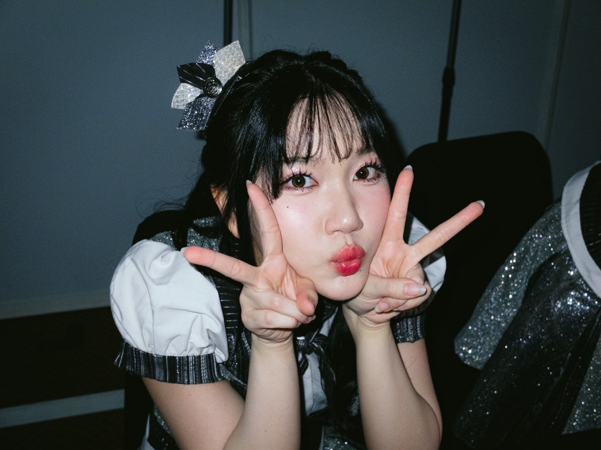
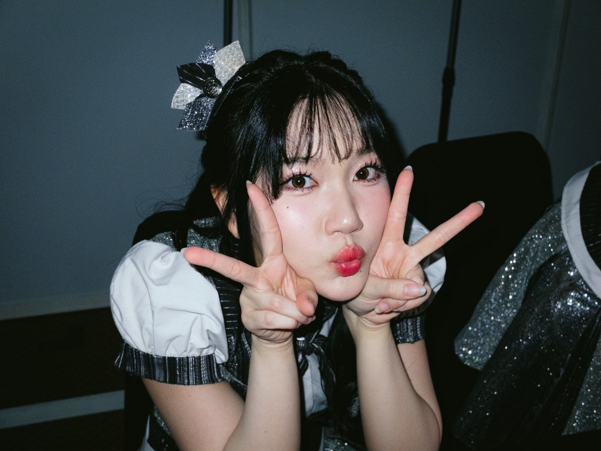

Marsha
Seperti pizza yang selalu dinanti-nantikan semua orang, selalu nantikan aku, ya?

Marsha Lenathea
Tanggal Lahir: 9 Januari 2006
Tinggi Badan: 163cm
 

Kesan Pribadi
Marsha itu tipe oshi yang bikin lo ketawa tiap hari. Vibenya ceria, suaranya manis, dan dia selalu total kalau perform. Bagi gue, dia kayak vitamin harian: selalu nyegerin hati.
×